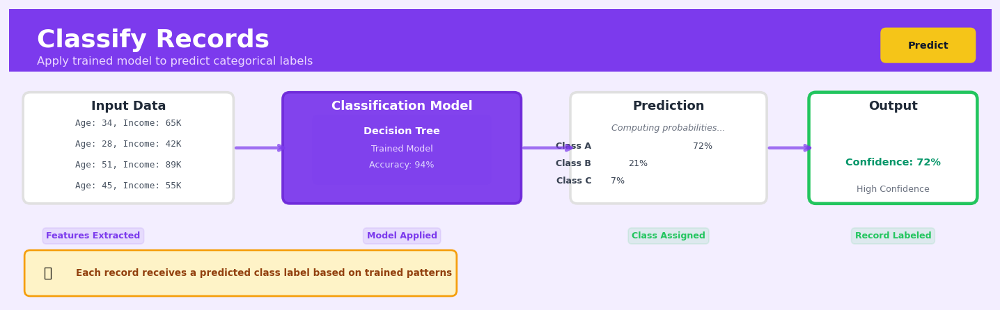

Classify Records#


The most common mistake with Classify Records is applying it to production data without checking for feature drift first. Your model might have been trained on last quarter's customer behavior, but if the input distribution has shifted significantly, you'll get confident predictions that are systematically wrong. Always monitor your input feature distributions and set up alerts when they deviate beyond acceptable thresholds from your training data.
The 60-Second Version#
What it does: Classification predicts which category each customer, transaction, or item belongs to based on patterns learned from past examples.
When to use it: You have historical data showing which category things belonged to, and you need to predict categories for new cases—like which customers will churn, which transactions are fraudulent, or which leads will convert.
What you get back: For each record, you receive a predicted category (often with a probability score), enabling you to prioritize actions, automate decisions, or flag items for review.
Difficulty |
Moderate |
Typical runtime |
Seconds to minutes on 100K rows |
What you bring |
Historical data with known categories and characteristics for each record |
What you get |
Predicted category label and confidence score for each new record |
Heuristix bucket |
Predict — Machine Learning & Forecasting |
Your model is only as unbiased as the historical data you train it on—garbage in, biased out.
Learning Objectives#
After reading this chapter, a business user will be able to:
Identify business problems where classification is appropriate by distinguishing scenarios requiring categorical predictions (customer churn, fraud detection, credit approval) from those needing numerical forecasts or other techniques.
Interpret classification outputs including predicted class labels, probability scores, and confusion matrices to explain model performance and reliability to non-technical stakeholders.
Decide on optimal classification thresholds by balancing the business costs of false positives versus false negatives for their specific use case.
After reading this chapter, a data scientist will be able to:
Implement classification pipelines that correctly handle imbalanced classes, encode categorical variables, scale features appropriately, and split data to prevent leakage.
Tune hyperparameters across different algorithms (tree depth, regularization strength, number of estimators) by systematically evaluating their impact on bias-variance tradeoff and generalization performance.
Diagnose classification failures by analyzing precision-recall curves, ROC curves, feature importance, and misclassification patterns to identify data quality issues, insufficient features, or algorithmic limitations.
Overview#
Classify Records is a supervised machine learning technique that assigns categorical labels to observations based on learned patterns in historical data. Given a dataset where some records have known class memberships, classification algorithms construct decision boundaries that partition the feature space, enabling prediction of class labels for new, unseen records. This technique belongs to the family of supervised learning methods and encompasses a broad spectrum of algorithms including logistic regression, decision trees, random forests, gradient boosting machines, support vector machines, and neural networks.
When to Use This#
Use this when:
You have labelled historical data — Classification requires a target variable with known categorical outcomes for training. If you have records where the outcome has already been observed (e.g., customers who churned vs. stayed, loans that defaulted vs. performed), classification can learn the distinguishing patterns.
You need to predict discrete categories — The business question asks “which group does this belong to?” rather than “how much?” or “how many?” Examples include fraud/not fraud, approved/denied, segment A/B/C.
You want probabilistic predictions — Most classifiers output class probabilities, enabling risk scoring, threshold optimisation, and ranked prioritisation rather than simple yes/no decisions.
You need to understand what drives classification — Many classification algorithms (logistic regression, decision trees, gradient boosting with SHAP) provide interpretable feature importance or coefficients that explain why records receive particular predictions.
You have imbalanced classes but can address them — Classification handles class imbalance through sampling strategies, class weights, and appropriate evaluation metrics, making it suitable for rare event detection.
You need to operationalise predictions at scale — Trained classifiers can score millions of records in batch or real-time, making them suitable for production deployment.
Do NOT use this when:
Your target is continuous — If you’re predicting a numeric quantity (revenue, temperature, duration), use regression instead. Classification of a continuous variable into arbitrary bins loses information.
You lack labelled training data — Without known outcomes, you cannot train a supervised classifier. Consider clustering or anomaly detection for unlabelled data exploration.
Classes are poorly defined or overlap completely — If the true classes cannot be distinguished by available features, no classifier will perform well. Investigate feature engineering or data collection first.
You need causal inference — Classification predicts association, not causation. To answer “what happens if we intervene?”, use causal inference methods.
Questions This Answers#
Customer Behavior and Risk#
Will this customer churn in the next 90 days, and should we intervene now?
Which of our credit card applicants are likely to default, and should we approve their applications?
Is this transaction fraudulent, or should we let it go through?
Which customers are most likely to respond to our promotional campaign so we don’t waste marketing budget?
Will this patient be readmitted to the hospital within 30 days of discharge?
Operational Decisions and Quality Control#
Should we approve this loan application, or is the risk too high?
Is this part coming off the assembly line defective, or can we ship it?
Which support tickets should we prioritize as urgent versus routine?
Will this employee likely leave the company in the next six months, and should we take retention action?
Is this insurance claim legitimate or potentially fraudulent?
Market Opportunity and Targeting#
Which leads are most likely to convert so our sales team focuses on the right prospects?
Should we target this customer segment for our premium product launch?
Which accounts are at high risk of late payment, and should we adjust their credit terms?
Are these online reviews from real customers or bots trying to manipulate our rating?
How It Works#
Imagine you’re a doctor in a busy emergency room, and you need to quickly decide whether each arriving patient should go to the general ward, the intensive care unit, or be sent home. Over the years, you’ve seen thousands of patients, and you’ve noticed patterns: patients with certain combinations of symptoms, vital signs, and test results tend to end up needing the ICU, while others with different patterns do fine at home. You’ve mentally catalogued these patterns—high fever plus low blood pressure usually means ICU, minor headache with normal vitals usually means home. Now, when a new patient walks in, you quickly measure their vitals, compare them against your mental catalog of patterns, and make your decision. Classification works exactly this way: it learns patterns from past cases where the outcome is known, then uses those patterns to predict outcomes for new cases.
TRAINING DATA (historical records with known labels)
┌─────────┬──────────┬────────┬─────────┐
│ Age │ Income │ Score │ Class │
├─────────┼──────────┼────────┼─────────┤
│ 25 │ 45K │ 650 │ Low │
│ 42 │ 85K │ 720 │ High │
│ 33 │ 52K │ 680 │ Low │
│ 55 │ 95K │ 740 │ High │
└─────────┴──────────┴────────┴─────────┘
↓
ALGORITHM LEARNS PATTERNS
(finds decision boundaries)
↓
TRAINED MODEL
┌─────────────────────┐
│ Rules discovered: │
│ IF Income > 70K AND │
│ Score > 700 │
│ THEN Class = High │
│ ELSE Class = Low │
└─────────────────────┘
↓
NEW RECORD (unknown label)
┌─────────┬──────────┬────────┬─────────┐
│ 38 │ 78K │ 715 │ ? │
└─────────┴──────────┴────────┴─────────┘
↓
PREDICTION
┌─────────┬──────────┬────────┬─────────┐
│ 38 │ 78K │ 715 │ High │
└─────────┴──────────┴────────┴─────────┘
Step 1: Collect labeled training data. Start with a dataset where you already know the correct answer—the class label—for each record. This might be thousands of past loan applications labeled as “approved” or “denied,” or emails tagged as “spam” or “legitimate.” The algorithm needs these examples to learn from.
Step 2: Identify the features that might predict the label. Look at the characteristics of each record—their attributes or measurements. For loan applications, this might be income, credit score, and employment history. The algorithm examines how these features relate to the known outcomes.
Step 3: Find patterns that separate the classes. The algorithm searches through the feature space to discover boundaries that divide the classes. It might find that applicants with income above seventy thousand and credit scores above seven hundred tend to get approved, while those below these thresholds tend to get denied. Different algorithms draw these boundaries in different ways—some use straight lines, others use complex curves.
Step 4: Build a model that captures these patterns. The algorithm creates a set of rules or decision boundaries that best separate the classes in the training data. This model is like a recipe or flowchart for making predictions.
Step 5: Test the model on new, unlabeled records. When a new record arrives, the model examines its features, checks which side of the learned boundaries it falls on, and assigns it to the most likely class based on the patterns it learned.
Step 6: Output the predicted class label. The model stamps each new record with its prediction, enabling automated decision-making at scale.
The key insight: Classification works because similar inputs tend to produce similar outputs—records that look alike in their features usually belong to the same class, so patterns learned from historical data can predict future outcomes.
The Intuition#
Imagine you are a bank loan officer who has reviewed thousands of loan applications over your career. For each application, you observed the applicant’s income, debt levels, employment history, and credit score, and you eventually learned whether they repaid the loan or defaulted. Over time, your brain developed an internal model: applicants with certain combinations of characteristics tend to repay, while others tend to default. When a new application arrives, you mentally compare it against these learned patterns and make a prediction.
Classification algorithms formalise this intuitive process. They examine historical records where the outcome is known, identify patterns that distinguish classes, and encode these patterns into a mathematical model. The model then becomes a decision-making machine: feed it the features of a new record, and it outputs a predicted class (and typically a probability for each class). The key insight is that classification is fundamentally about learning boundaries in feature space—regions where one class dominates versus regions where another dominates.
Different classification algorithms approach this boundary-learning task differently. Logistic regression fits a smooth, sigmoid-shaped boundary that’s linear in the original features (or transformed features). Decision trees recursively partition the space using axis-aligned splits, creating rectangular decision regions. Random forests and gradient boosting aggregate many trees to create complex, flexible boundaries while controlling overfitting. Support vector machines find the boundary that maximises the margin between classes. Neural networks learn hierarchical, nonlinear transformations that can capture almost arbitrarily complex boundaries. Despite their differences, all these methods share the same goal: partition the feature space so that records in each region are predominantly of one class.
The power of classification lies in its ability to generalise. A well-trained classifier doesn’t just memorise the training data—it learns the underlying patterns that transfer to new data. This generalisation is what makes classification valuable in business: the patterns learned from historical customers predict the behaviour of future customers, enabling proactive decision-making.
The Mathematics#
Problem Setup and Notation#
Let \(\mathcal{D} = \{(\mathbf{x}_i, y_i)\}_{i=1}^{n}\) denote a training dataset of \(n\) labelled records, where:
\(\mathbf{x}_i \in \mathbb{R}^p\) is a \(p\)-dimensional feature vector for record \(i\)
\(y_i \in \{1, 2, \ldots, K\}\) is the class label for record \(i\)
\(K\) is the number of classes (binary classification has \(K = 2\))
The goal of classification is to learn a function \(f: \mathbb{R}^p \rightarrow \{1, \ldots, K\}\) that minimises the expected misclassification rate on unseen data:
where the expectation is taken over the joint distribution of \((\mathbf{x}, y)\).
Probabilistic Framework#
Most modern classifiers model the posterior probability \(P(Y = k | \mathbf{x})\) for each class \(k\). The predicted class is then:
This probabilistic formulation enables:
Threshold adjustment for different misclassification costs
Uncertainty quantification
Calibrated risk scores
Logistic Regression (Binary Case)#
For binary classification (\(K = 2\)), logistic regression models the log-odds of the positive class as a linear function of features:
Solving for the probability:
where \(\sigma(\cdot)\) is the sigmoid function.
Objective Function: Parameters are estimated by maximum likelihood. Given independent observations, the log-likelihood is:
where \(\hat{p}_i = \sigma(\beta_0 + \boldsymbol{\beta}^T \mathbf{x}_i)\).
This is equivalent to minimising the binary cross-entropy loss:
Optimisation: The log-likelihood is concave, guaranteeing a unique global maximum. Newton-Raphson or gradient descent methods find the optimal \(\boldsymbol{\beta}\).
Multiclass Extension: Softmax Regression#
For \(K > 2\) classes, we use the softmax function. Define \(K\) linear functions \(z_k = \beta_{0k} + \boldsymbol{\beta}_k^T \mathbf{x}\). The probability of class \(k\) is:
The cross-entropy loss generalises to:
Decision Trees#
Decision trees partition the feature space via recursive binary splits. At each node, the algorithm selects feature \(j\) and threshold \(t\) that best separates classes.
For classification, the Gini impurity at node \(m\) with class proportions \(\hat{p}_{mk}\) is:
Alternatively, the entropy (information gain criterion) is:
The optimal split minimises the weighted impurity of child nodes:
Ensemble Methods#
Random Forests aggregate \(B\) decision trees, each trained on a bootstrap sample with random feature subsets at each split. The final prediction averages class probabilities:
Gradient Boosting builds trees sequentially, with each tree fitting the negative gradient of the loss function. For log-loss, the pseudo-residual for class \(k\) is:
where \(y_{ik} = \mathbf{1}(y_i = k)\) and \(\hat{p}_{ik}\) is the current probability estimate.
Evaluation Metrics#
For binary classification with confusion matrix entries (TP, TN, FP, FN):
Accuracy: $\( \text{Accuracy} = \frac{TP + TN}{TP + TN + FP + FN} \)$
Precision: $\( \text{Precision} = \frac{TP}{TP + FP} \)$
Recall (Sensitivity): $\( \text{Recall} = \frac{TP}{TP + FN} \)$
F1 Score: $\( F_1 = 2 \cdot \frac{\text{Precision} \cdot \text{Recall}}{\text{Precision} + \text{Recall}} \)$
Area Under ROC Curve (AUC-ROC): Measures discrimination ability across all thresholds—the probability that a randomly chosen positive ranks higher than a randomly chosen negative.
Assumptions and Edge Cases#
Key Assumptions:
Training and test data are drawn from the same distribution (no covariate shift)
Features contain signal relevant to class membership
Classes are well-defined and consistently labelled
Edge Cases:
Perfect separation in logistic regression: coefficients diverge to infinity. Regularisation resolves this.
Pure nodes in decision trees: entropy/Gini is zero; no further splitting needed.
Extreme class imbalance: accuracy becomes misleading; use precision-recall metrics.
Understanding the Mathematics#
The Logistic Function#
The equation: $\(\sigma(z) = \frac{1}{1 + e^{-z}}\)$
Read it aloud: The logistic function sigma of z equals one divided by the quantity one plus e raised to the negative z power.
What each symbol means:
\(\sigma(z)\) = the logistic function output, a probability between 0 and 1
\(z\) = the linear combination of input features (can be any real number)
\(e\) = Euler’s number, approximately 2.718
The fraction = a transformation that squashes any number into the 0-to-1 range
A concrete numerical example: A bank calculates a customer credit score where \(z = 2.5\). Plugging into the equation: \(\sigma(2.5) = \frac{1}{1 + e^{-2.5}} = \frac{1}{1 + 0.082} = \frac{1}{1.082} = 0.924\). This means the model predicts a 92.4% probability the customer will repay their loan.
Why this equation matters: Without this transformation, our model would predict nonsensical probabilities like 150% or -30%; the logistic function guarantees every prediction is a valid probability we can use for business decisions.
The Linear Combination#
The equation: $\(z = \beta_0 + \beta_1 x_1 + \beta_2 x_2 + \ldots + \beta_n x_n\)$
Read it aloud: Z equals beta-zero plus beta-one times x-one plus beta-two times x-two, continuing through beta-n times x-n.
What each symbol means:
\(z\) = raw prediction score before probability conversion
\(\beta_0\) = intercept (baseline prediction with no features)
\(\beta_1, \beta_2, \ldots, \beta_n\) = coefficients showing each feature’s importance
\(x_1, x_2, \ldots, x_n\) = input features for a specific customer or record
A concrete numerical example: An email spam classifier uses: income (\(x_1 = 75,000\)), account age in years (\(x_2 = 3\)), with learned weights \(\beta_0 = -4\), \(\beta_1 = 0.00004\), \(\beta_2 = 0.8\). The calculation: \(z = -4 + (0.00004 \times 75,000) + (0.8 \times 3) = -4 + 3 + 2.4 = 1.4\).
Why this equation matters: This weighted combination lets the model learn which features matter most—discovering, for instance, that account age is a stronger fraud signal than income.
The Log-Loss Function#
The equation: $\(L = -\frac{1}{m}\sum_{i=1}^{m}\left[y_i \log(\hat{y}_i) + (1-y_i)\log(1-\hat{y}_i)\right]\)$
Read it aloud: Loss L equals negative one over m times the sum from i equals one to m of: y-sub-i times the log of y-hat-sub-i, plus the quantity one minus y-sub-i, times the log of one minus y-hat-sub-i.
What each symbol means:
\(L\) = total prediction error across all training examples
\(m\) = number of training records
\(y_i\) = actual class (0 or 1) for record i
\(\hat{y}_i\) = predicted probability for record i
\(\log\) = natural logarithm, heavily penalizing confident wrong predictions
A concrete numerical example: We have 3 loan applications. Actual defaults: [1, 0, 1]. Predicted probabilities: [0.9, 0.2, 0.7]. Calculate: \(L = -\frac{1}{3}[(1 \times \log(0.9) + 0 \times \log(0.1)) + (0 \times \log(0.2) + 1 \times \log(0.8)) + (1 \times \log(0.7) + 0 \times \log(0.3))] = -\frac{1}{3}[-0.105 + 0 - 0.223 + 0 - 0.357 + 0] = 0.228\).
Why this equation matters: This loss function forces the algorithm to be honest about uncertainty—predicting 51% confidence when actually unsure, rather than falsely claiming 99% certainty on borderline cases.
The Big Picture#
Classification mathematics transforms the simple pattern-matching task into a rigorous optimization problem. We take input features, combine them linearly with learned weights, then squeeze that score through the logistic function to guarantee valid probabilities. The log-loss function measures how badly we’re doing, and gradient descent algorithms tweak the weights to minimize that loss. This approach was chosen because linear combinations are interpretable and computationally efficient, while the logistic transformation respects the bounded nature of probabilities. At its heart, classification mathematics is teaching a machine to draw the smartest possible boundary line through your data, putting customers on the “approve” or “deny” side with quantified confidence.
Python Implementation#
import numpy as np
import pandas as pd
from sklearn.datasets import make_classification
from sklearn.model_selection import train_test_split, cross_val_score
from sklearn.preprocessing import StandardScaler
from sklearn.linear_model import LogisticRegression
from sklearn.ensemble import RandomForestClassifier, GradientBoostingClassifier
from sklearn.metrics import (
classification_report, confusion_matrix, roc_auc_score,
precision_recall_curve, RocCurveDisplay
)
import matplotlib.pyplot as plt
# =============================================================================
# 1. Generate Realistic Synthetic Data (Customer Churn Scenario)
# =============================================================================
np.random.seed(42)
# Create classification dataset with informative and redundant features
X, y = make_classification(
n_samples=5000,
n_features=10,
n_informative=6,
n_redundant=2,
n_clusters_per_class=2,
weights=[0.7, 0.3], # 30% churn rate (imbalanced)
flip_y=0.03, # 3% label noise
random_state=42
)
# Convert to DataFrame with meaningful feature names
feature_names = [
'tenure_months', 'monthly_spend', 'support_tickets', 'login_frequency',
'contract_length', 'payment_delays', 'product_usage', 'satisfaction_score',
'competitor_interaction', 'price_sensitivity'
]
df = pd.DataFrame(X, columns=feature_names)
df['churned'] = y
print("Dataset shape:", df.shape)
print("\nClass distribution:")
print(df['churned'].value_counts(normalize=True))
# =============================================================================
# 2. Train-Test Split and Preprocessing
# =============================================================================
X_train, X_test, y_train, y_test = train_test_split(
df[feature_names], df['churned'],
test_size=0.25,
stratify=df['churned'], # Preserve class proportions
random_state=42
)
# Scale features for logistic regression (tree methods don't require this)
scaler = StandardScaler()
X_train_scaled = scaler.fit_transform(X_train)
X_test_scaled = scaler.transform(X_test)
# =============================================================================
# 3. Model 1: Logistic Regression (Interpretable Baseline)
# =============================================================================
print("\n" + "="*60)
print("LOGISTIC REGRESSION")
print("="*60)
logreg = LogisticRegression(
penalty='l2', # Ridge regularisation
C=1.0, # Inverse regularisation strength
class_weight='balanced', # Handle class imbalance
max_iter=1000,
random_state=42
)
logreg.fit(X_train_scaled, y_train)
# Predictions and probabilities
y_pred_lr = logreg.predict(X_test_scaled)
y_prob_lr = logreg.predict_proba(X_test_scaled)[:, 1]
print("\nClassification Report:")
print(classification_report(y_test, y_pred_lr, target_names=['Retained', 'Churned']))
print(f"ROC-AUC Score: {roc_auc_score(y_test, y_prob_lr):.4f}")
# Interpret coefficients
coef_df = pd.DataFrame({
'feature': feature_names,
'coefficient': logreg.coef_[0],
'odds_ratio': np.exp(logreg.coef_[0])
}).sort_values('coefficient', key=abs, ascending=False)
print("\nFeature Coefficients (sorted by absolute value):")
print(coef_df.to_string(index=False))
# =============================================================================
# 4. Model 2: Random Forest (Flexible Ensemble)
# =============================================================================
print("\n" + "="*60)
print("RANDOM FOREST")
print("="*60)
rf = RandomForestClassifier(
n_estimators=200, # Number of trees
max_depth=10, # Limit depth to prevent overfitting
min_samples_leaf=20, # Minimum samples in leaf nodes
class_weight='balanced',
n_jobs=-1, # Use all CPU cores
random_state=42
)
rf.fit(X_train, y_train) # No scaling needed for tree methods
y_pred_rf = rf.predict(X_test)
y_prob_rf = rf.predict_proba(X_test)[:, 1]
print("\nClassification Report:")
print(classification_report(y_test, y_pred_rf, target_names=['Retained', 'Churned']))
print(f"ROC-AUC Score: {roc
## Visualisations


## Using This in Heuristix
### What You'll Need
The **Classify Records** node expects a single dataset with your features (the columns you'll use to predict) and a target column containing the categories you want to predict. Your target should be categorical — things like "Yes/No", "High/Medium/Low", or "Customer Segment A/B/C".
**Example input data:**
| customer_id | age | income | purchases_last_year | segment |
|-------------|-----|--------|---------------------|---------|
| 1001 | 34 | 52000 | 12 | Premium |
| 1002 | 45 | 78000 | 8 | Standard |
| 1003 | 29 | 43000 | 3 | Basic |
Your feature columns can be numeric or categorical. The node handles both automatically. You'll need at least 50-100 records for meaningful results, though more is always better.
### Configuration Parameters
| Parameter | What It Does | Default | When to Change It |
|-----------|--------------|---------|-------------------|
| **Target Column** | The column containing the categories you want to predict | None (required) | Always set this first — it's what you're trying to predict |
| **Feature Columns** | Which columns to use as predictors | All non-target columns | Exclude IDs, dates, or columns that would leak future information |
| **Algorithm** | The classification method to use | Auto | Choose "Decision Tree" for interpretability, "Random Forest" for accuracy, or "Logistic Regression" for speed |
| **Train/Test Split** | Percentage of data reserved for testing | 80/20 | Use 90/10 if you have limited data; 70/30 for extra validation confidence |
| **Handle Missing Values** | How to deal with blank cells | Auto-impute | Switch to "Drop rows" if missingness itself is meaningful |
| **Class Balancing** | Whether to adjust for unequal category sizes | Off | Turn on if one category is rare (under 10% of records) |
### What You'll Get Back
Once the node runs, you'll see several outputs:
**New columns added to your data:**
- `predicted_[target_name]` — the predicted category for each record
- `confidence_score` — how certain the model is (0-100%)
- `is_correct` — TRUE/FALSE showing if the prediction matched reality (test set only)
**Metrics panel:**
- **Overall Accuracy** — percentage of correct predictions
- **Precision & Recall** by category — how well the model performs for each class
- **Confusion Matrix** — a grid showing where predictions were right and wrong
**Visualizations:**
- Feature importance chart (which columns matter most)
- ROC curve (for two-class problems)
- Prediction confidence distribution
### Connecting Downstream
After classification, you'll typically connect to:
- **Filter Records** — to isolate high-confidence predictions or specific predicted categories
- **Calculate Columns** — to create business rules based on predictions (e.g., "flag for review if predicted 'Churn' with >80% confidence")
- **Export Data** — to send predictions to your CRM or operational system
- **Evaluate Model** — if you want deeper performance analysis
### Quick Start
1. **Drag** the Classify Records node onto your canvas and connect your prepared dataset
2. **Select** your target column from the dropdown (the thing you want to predict)
3. **Review** the auto-selected features — remove any that don't make logical sense
4. **Leave** the algorithm on "Auto" for your first run
5. **Click** Run and wait 10-30 seconds
6. **Check** the accuracy metric — above 70% is decent, above 85% is good
7. **Review** the feature importance chart to understand what's driving predictions
### Pro Tips
**Start simple.** Your first model doesn't need to be perfect. Run with defaults, see what accuracy you get, then iterate.
**Watch for data leakage.** Never include columns that wouldn't be available at prediction time. If you're predicting customer churn, don't include "cancellation_date" as a feature.
**Check the confusion matrix carefully.** Overall accuracy can be misleading. A 95% accurate model that never predicts your rare-but-important category is useless.
**Use confidence scores wisely.** Low-confidence predictions (under 60%) might warrant human review rather than automated action.
**Save your feature engineering work.** The Calculate Columns you create before classification are often more important than the algorithm itself. Document what worked.
## Config Recipes
### Recipe 1: Rapid Prototyping
**When to use:** Initial data exploration when you need classification results in under 60 seconds to validate whether a predictive signal exists.
**Settings:**
| Parameter | Value | Why |
|-----------|-------|-----|
| Algorithm | Logistic Regression | Fastest training time, no hyperparameter tuning needed |
| Max iterations | 100 | Sufficient for convergence on most datasets |
| Train/test split | 70/30 | Adequate sample in both partitions |
| Cross-validation | None | Eliminates computational overhead |
| Feature scaling | StandardScaler | Required for logistic regression, computationally cheap |
| Class imbalance handling | None | Skip to maximize speed |
**What you get:** A baseline accuracy metric within seconds that tells you if further investment is worthwhile.
**Trade-off:** You sacrifice 5-15% accuracy compared to tuned ensemble methods and get no reliability estimates from cross-validation.
### Recipe 2: Production-Grade Deployment
**When to use:** Final model development for systems where prediction errors have business consequences and model audibility is required.
**Settings:**
| Parameter | Value | Why |
|-----------|-------|-----|
| Algorithm | Random Forest | Balance of accuracy and interpretability |
| n_estimators | 500 | Stabilizes predictions, diminishing returns beyond this |
| max_depth | 15 | Prevents overfitting while capturing interactions |
| min_samples_leaf | 5 | Enforces statistical significance in leaf nodes |
| Cross-validation | 5-fold stratified | Robust performance estimate with class balance |
| Train/validation/test | 60/20/20 | Separate validation for hyperparameter tuning |
| Class imbalance | SMOTE on training only | Handles imbalance without data leakage |
| Feature selection | Recursive Feature Elimination | Reduces dimensionality, improves interpretability |
**What you get:** A model with documented performance bounds, feature importance rankings, and robust generalization to new data.
**Trade-off:** Training time increases to 10-30 minutes and requires 3-5x more computational resources than rapid prototyping.
### Recipe 3: Severe Class Imbalance (1:100+ ratio)
**When to use:** Fraud detection, rare disease diagnosis, or any scenario where the positive class represents <1% of records.
**Settings:**
| Parameter | Value | Why |
|-----------|-------|-----|
| Algorithm | XGBoost | Handles imbalance better than alternatives |
| scale_pos_weight | (count_negative / count_positive) | Penalizes misclassifying minority class |
| eval_metric | aucpr | Precision-recall focuses on minority class |
| max_depth | 6 | Deeper trees capture rare patterns |
| min_child_weight | 1 | Allows small leaf nodes for rare cases |
| Sampling strategy | None | Let algorithm weighting handle imbalance |
| Threshold tuning | Optimize for F2 score | Prioritizes recall over precision |
**What you get:** A model that actually detects rare events rather than achieving 99% accuracy by predicting everything as negative.
**Trade-off:** Higher false positive rate (10-20%) but acceptable when catching true positives is paramount.
### Recipe 4: Cold-Start Content Categorization
**When to use:** Categorizing newly created content (documents, tickets, posts) when you have text descriptions but minimal historical metadata.
**Settings:**
| Parameter | Value | Why |
|-----------|-------|-----|
| Algorithm | Naive Bayes (Multinomial) | Excels with text features, handles high dimensionality |
| Vectorization | TF-IDF, max_features=5000 | Captures term importance while limiting dimensionality |
| ngram_range | (1, 2) | Captures single words and two-word phrases |
| min_df | 3 | Removes noise from extremely rare terms |
| Training data | Minimum 50 examples per class | Naive Bayes works with surprisingly small samples |
**What you get:** Functional classification from day one, even with limited training data, achieving 70-80% accuracy within hours of system launch.
**Trade-off:** Performance plateaus quickly; more sophisticated models will surpass this after sufficient data accumulates.
## Business Applications
**Financial Services**
A regional US credit union with 180,000 members needed to approve personal loans faster while maintaining prudent risk standards. By training a classification model on five years of loan performance data—incorporating credit scores, debt-to-income ratios, employment history, and transaction patterns—the credit union automated 73% of loan decisions that previously required manual underwriting. This reduced approval time from 4 days to 20 minutes for qualifying applicants while decreasing default rates by 1.2 percentage points, representing $840,000 in avoided losses annually.
**Retail**
An e-commerce fashion retailer with 1.8M SKUs across twelve European markets struggled with product returns costing 8% of gross revenue. The company built a classification system that predicts which items a customer is likely to return based on browsing behaviour, past return history, size inconsistencies, and product attributes. By surfacing targeted sizing guidance and fit warnings at checkout for high-risk transactions, the retailer reduced return rates from 18.3% to 13.7%, saving €4.2M annually while improving customer satisfaction scores by 11 points.
**Healthcare**
A network of 34 primary care clinics in Ontario faced a chronic problem: 22% of patients scheduled for preventive screenings failed to attend their appointments. The network deployed a classification model analyzing appointment history, travel distance, day of week, weather patterns, and demographic factors to identify high-risk no-show appointments. Staff now make proactive reminder calls and offer transportation assistance to flagged patients, lifting attendance rates to 87% and enabling the clinics to screen an additional 3,400 patients annually without adding appointment slots.
**Insurance**
A commercial property insurer processing 14,000 claims monthly spent excessive adjuster time investigating fraudulent submissions. The insurer implemented a classification system that flags suspicious claims by examining accident descriptions, claimant history, witness statements, repair estimates, and timing patterns. High-risk claims are routed to specialist investigators while straightforward cases proceed to fast-track settlement. This approach identified 34% more fraudulent claims while reducing investigation costs by $1.8M per year and cutting average settlement time for legitimate claims from 41 to 28 days.
**Manufacturing**
A German automotive parts manufacturer producing 420,000 injection-moulded components daily needed to reduce defect rates without slowing production lines. Engineers trained a classification model on sensor data—melt temperature, injection pressure, cooling time, ambient humidity—from nine months of production runs labeled with quality inspection outcomes. The system now predicts defective parts in real-time, automatically adjusting machine parameters or triggering operator alerts. Defect rates dropped from 2.8% to 0.9%, preventing 23,000 defective parts from reaching customers each month.
**Logistics**
A Southeast Asian e-commerce logistics provider handling 680,000 daily deliveries struggled with failed first-attempt deliveries that required costly redelivery trips. The company built a classification model predicting delivery success likelihood based on address completeness, recipient responsiveness, building type, time of day, and historical delivery patterns for similar locations. Dispatchers now schedule uncertain deliveries during times when recipients are most likely available and contact customers proactively for high-risk shipments, lifting first-attempt success rates from 76% to 89%.
**Marketing**
A B2B SaaS company with 8,400 trial users needed to identify which would convert to paid subscriptions. Their sales team previously contacted all trial users indiscriminately, wasting effort on unlikely prospects. By classifying users based on feature usage, team size, login frequency, API calls, and support interactions, the company focused outreach on high-probability converters. This targeted approach lifted conversion rates from 8.2% to 14.6% while reducing sales team burnout and allowing representatives to provide deeper consultation to qualified leads.
**Telecommunications**
A national mobile carrier with 8.2M subscribers wanted to predict customer churn before competitors poached valuable accounts. The classification model analyzes call patterns, data usage trends, customer service interactions, contract terms, and competitor promotional timing. At-risk customers identified 45–60 days before likely cancellation receive personalized retention offers, reducing monthly churn from 2.4% to 1.7%—retaining 57,400 additional subscribers annually worth approximately $22M in lifetime value.
**Energy**
A municipal utility serving 340,000 customers implemented classification to predict which residential accounts would default on payments. By identifying high-risk accounts early through payment history, seasonal usage patterns, economic indicators, and life events, the utility proactively offers payment plans and hardship programs. This reduced write-offs by 28% while maintaining stronger customer relationships during financial difficulties.
**Public Sector**
A city building department inspecting 12,000 properties annually for code violations used classification to prioritize inspections. The model predicts violation likelihood using property age, complaint history, ownership changes, neighbourhood characteristics, and permit records. Inspectors now focus on high-risk properties first, discovering 41% more serious violations while reducing inspection costs by reallocating resources from low-risk properties.
## Worked Example
Sarah Chen, a senior data scientist at Meridian Insurance, was halfway through her morning coffee when the VP of Underwriting walked into her office unannounced. "We're losing money on small business policies," he said, dropping a folder on her desk. "Too many claims in the first year. I need to know which applications we should approve and which ones are going to cost us." The company had been using a simple rules-based system—industry type, revenue, years in business—but claims were up 23% year-over-year. Sarah had three weeks to build something better before the next underwriting committee meeting.
Sarah pulled five years of small business policy data from the company's data warehouse: 8,847 policies with known outcomes. Each record included application details and a binary flag indicating whether the policy had generated claims exceeding the premium in the first year. The data was messy in the way real insurance data always is—missing values in optional fields, inconsistent formatting of business categories, one memorable entry where annual revenue was listed as "$12." After cleaning, she had a workable dataset:
| business_type | years_operating | annual_revenue | employees | high_claim |
|--------------|-----------------|----------------|-----------|------------|
| Restaurant | 3 | 425000 | 12 | Yes |
| Retail | 8 | 680000 | 5 | No |
| Construction | 1 | 290000 | 8 | Yes |
| Professional | 15 | 1200000 | 22 | No |
| Restaurant | 2 | 310000 | 7 | Yes |
The pattern wasn't immediately obvious from looking at the table, which is exactly why she needed machine learning.
Sarah opened her modeling environment and configured the Classify Records node. She selected Random Forest as her algorithm—it handles mixed data types well and provides feature importance scores the underwriting team could actually understand. She allocated 70% of the data for training and held back 30% for testing, making sure to stratify by the target variable since only 31% of policies were high-claim. For the Random Forest parameters, she chose 200 trees (enough for stable predictions without taking forever to run) and set the maximum depth to 10 to prevent overfitting. "I've seen too many models that memorize the training data," she muttered to herself, adjusting the settings. She kept the minimum samples per leaf at 20—small enough to capture patterns but large enough to generalize.
After running the model, Sarah examined the results with the careful attention of someone who knew these numbers would be challenged in a boardroom. The overall accuracy was 78.4%, but she knew better than to rely on that alone. The confusion matrix told the real story:
| Actual/Predicted | Predicted No | Predicted Yes |
|-----------------|--------------|---------------|
| **Actual No** | 1,634 | 189 |
| **Actual Yes** | 382 | 449 |
The precision for high-claim policies was 70.4%—meaning when the model flagged an application as risky, it was right about seven times out of ten. The recall was 54.0%, capturing just over half of the actual problem policies. The ROC-AUC score came in at 0.82, indicating strong discriminative ability.
But the real insight came from the feature importance scores. Years operating was the strongest predictor (importance: 0.34), followed by business type (0.28) and number of employees (0.21). Annual revenue, surprisingly, ranked fourth (0.17). "We've been overweighting revenue in our manual process," Sarah realized. A restaurant with two years of operation was high-risk regardless of revenue, while a professional services firm with 15 years of history was generally safe even with moderate revenue.
Sarah presented the model to the underwriting committee two weeks later. She didn't lead with accuracy metrics—she showed them the cost analysis. By rejecting applications the model flagged as high-risk (using a probability threshold of 0.45, which she'd tuned to balance false positives and false negatives), they could reduce first-year claim losses by an estimated $2.1 million annually, while only turning away 340 applications that would have been profitable. The committee approved a pilot program that same day. Within six months, the new model-assisted underwriting process was standard across all regions.
If Sarah were doing this again, she'd push harder for more granular business type categories—"Restaurant" covered everything from food trucks to hotel dining rooms—and she'd build separate models for different policy sizes. The one-size-fits-all approach worked, but left money on the table. She'd also want external data: business credit scores, local economic indicators, anything to give the model more signal. But for three weeks of work with internal data only, it had done exactly what mattered: turned a vague concern about losses into a concrete decision-making tool.
```python
# Sarah's modeling script
import pandas as pd
from sklearn.ensemble import RandomForestClassifier
from sklearn.model_selection import train_test_split
from sklearn.metrics import classification_report, roc_auc_score
# Load cleaned policy data
df = pd.read_csv('small_business_policies_cleaned.csv')
# Prepare features - encode business_type as dummies
X = pd.get_dummies(df[['business_type', 'years_operating',
'annual_revenue', 'employees']],
drop_first=True)
y = (df['high_claim'] == 'Yes').astype(int)
# Split with stratification to preserve class balance
X_train, X_test, y_train, y_test = train_test_split(
X, y, test_size=0.3, stratify=y, random_state=42)
# Configure Random Forest with conservative settings
rf_model = RandomForestClassifier(
n_estimators=200,
max_depth=10,
min_samples_leaf=20,
random_state=42
)
rf_model.fit(X_train, y_train)
y_pred = rf_model.predict(X_test)
y_pred_proba = rf_model.predict_proba(X_test)[:, 1]
# Evaluate - metrics that matter for business decision
print(classification_report(y_test, y_pred))
print(f"ROC-AUC: {roc_auc_score(y_test, y_pred_proba):.3f}")
# Feature importance for underwriting team
feature_importance = pd.DataFrame({
'feature': X.columns,
'importance': rf_model.feature_importances_
}).sort_values('importance', ascending=False)
Interpreting Your Results#
You’ve just run your classification model and you’re staring at a dashboard full of metrics. Let’s decode what you’re actually looking at and whether it’s good enough to trust.
Accuracy Score#
What it means: If your accuracy is 0.82, then 82% of all predictions matched the actual outcomes in your test data. It’s the simplest measure: how often was the model right?
Benchmarks:
Below 0.60: Something is wrong. Either your features contain no signal, or there’s a data quality issue. Don’t proceed.
0.60–0.75: Mediocre. The model sees some patterns but misses frequently. Acceptable only for exploratory work or very noisy domains.
0.75–0.90: Good. This range is production-worthy for most business applications.
Above 0.90: Excellent, but verify you’re not overfitting. If training accuracy is also above 0.90, check your validation approach.
Red flag: Accuracy above 0.95 with complex data often means data leakage—you’ve accidentally included information that wouldn’t be available at prediction time, like using “customer_churned_date” to predict churn.
Precision and Recall#
What they mean: These matter when classes aren’t equal or when one type of error costs more than another.
Precision answers: “When the model predicts the positive class, how often is it right?” Precision of 0.70 means 30% of your positive predictions are false alarms.
Recall answers: “Of all actual positive cases, what percentage did we catch?” Recall of 0.65 means you’re missing 35% of true positives.
Benchmarks:
Below 0.50: Poor. You’re generating too many false predictions (low precision) or missing too many real cases (low recall).
0.50–0.70: Moderate. Usable if the cost of errors is low.
0.70–0.85: Good. Suitable for most business contexts.
Above 0.85: Strong performance. Deploy with confidence.
Red flags:
High precision (>0.90) but low recall (<0.60): Your model is conservative, only flagging obvious cases. You’re missing the majority of true positives.
High recall (>0.90) but low precision (<0.60): Your model is trigger-happy, flagging everything. Most alerts will be false positives.
Confusion Matrix#
What it means: This table shows the four possible outcomes: true positives, true negatives, false positives (Type I errors), and false negatives (Type II errors). Read the diagonal cells—those are correct predictions. Off-diagonal cells are mistakes.
Red flags:
Extreme class imbalance in predictions: If you have 950 predictions in one class and 50 in another, but your training data was balanced, your model has collapsed and is almost always predicting one class.
Asymmetric errors: If false positives and false negatives are vastly different in count, understand which error is costlier for your business and whether the model’s behavior aligns with that.
ROC-AUC Score#
What it means: The Area Under the Receiver Operating Characteristic curve measures how well your model separates classes across all possible decision thresholds. An AUC of 0.85 means there’s an 85% chance the model ranks a random positive instance higher than a random negative instance.
Benchmarks:
0.50: Your model is no better than random guessing. Start over.
0.50–0.70: Poor discrimination. Not actionable.
0.70–0.80: Acceptable. The model has learned meaningful patterns.
0.80–0.90: Good. Deploy for most use cases.
Above 0.90: Excellent, but verify with out-of-time validation.
Feature Importance Chart#
What it means: This shows which variables most influenced the model’s predictions. Higher bars indicate stronger influence.
Red flags:
One feature dominates: If a single feature has 80%+ importance, you might not need machine learning—a simple rule might work.
ID fields or dates ranking high: These shouldn’t predict outcomes. You likely have data leakage.
Sanity Check Checklist#
Training accuracy isn’t dramatically higher than test accuracy (gap should be <10 percentage points)
Feature importance aligns with domain knowledge (no surprise variables at the top)
Class distribution in predictions roughly matches training data (unless you’ve adjusted thresholds intentionally)
No future information leaked into features (check timestamps and causality)
Performance on most recent data matches overall test performance (models degrade over time)
Good Enough to Act On?#
Deploy your model when you meet all three of these thresholds: (1) Test accuracy or AUC is in the “Good” benchmark range for your metric, (2) The gap between training and test performance is under 10 percentage points, and (3) The confusion matrix shows your model makes the types of errors your business can tolerate. If any of these fail, iterate on features, try different algorithms, or collect more data before putting this model into production.
Decision Guidance#
What This Result Is Telling You#
A classification model gives you a predicted label for each record—whether a customer will churn, whether a transaction is fraudulent, whether a loan applicant will default, or whether a lead will convert. But the value isn’t in the label itself; it’s in knowing how reliably you can act on that prediction. When your model classifies 1,000 customers as “high churn risk,” you need to know how many of those 1,000 actually will churn (precision) and how many at-risk customers you’re missing entirely (recall). These trade-offs determine whether you’re wasting retention budget on satisfied customers or losing your best accounts because you never reached out.
The model’s performance metrics reveal where your confidence should lie. An 85% accuracy sounds impressive, but if only 5% of your transactions are actually fraudulent, a model that flags nothing would achieve 95% accuracy by doing nothing at all. What matters is whether the model correctly identifies the minority class you care about. Precision tells you how much noise you’ll deal with (false alarms), while recall tells you how much signal you’re missing (undetected cases). The confusion matrix shows exactly where the model fails—does it miss most positives, or does it cry wolf constantly?
Beyond aggregate metrics, examine performance across segments. A model might achieve 90% accuracy overall but only 60% for your fastest-growing customer segment or newest product line. If performance degrades in strategically important subgroups, the overall numbers are misleading. You need consistent performance in the areas where decisions have the highest stakes.
Decision Points#
If you see this… |
It means… |
Recommended action |
Who acts on this |
|---|---|---|---|
Precision >75% and recall >70% in the positive class |
The model reliably identifies your target group with manageable false positives |
Deploy to production with standard monitoring; allocate full budget to act on predictions |
Product/Operations Manager |
Precision >85% but recall <50% |
The model is conservative—what it flags is usually correct, but it misses many true cases |
Use for high-cost interventions (personalized outreach, manual review); supplement with rule-based fallback for coverage |
Campaign Manager + Analytics Lead |
Recall >80% but precision <60% |
The model catches most true cases but generates many false alarms |
Deploy only if false positives are low-cost; implement secondary screening for flagged cases |
Risk Manager + Operations |
Performance difference >15 percentage points between segments |
The model has blind spots in certain customer groups or scenarios |
Do not deploy uniformly; either retrain with balanced data or apply only to high-performing segments |
Data Science Lead + Business Owner |
AUC-ROC <0.75 or accuracy barely exceeds baseline rate |
The model has weak discriminatory power |
Investigate feature quality and data leakage; do not use for automated decisions |
Data Science Team |
When to Proceed vs. Investigate Further#
Proceed with confidence:
Precision and recall both exceed 75% for your target class
Performance is consistent across all important customer segments (variance <10 percentage points)
The confusion matrix shows errors are randomly distributed, not concentrated in high-value segments
AUC-ROC exceeds 0.85 and you’ve validated on truly holdout data from a different time period
Proceed with caution:
Either precision or recall exceeds 75%, but not both—understand which errors you’re accepting
Model performs well on historical data but hasn’t been validated on recent (within 30 days) examples
Feature importance reveals heavy dependence on 1–2 variables that could be unstable
Investigate before acting:
Performance metrics vary by more than 15 percentage points across demographic groups or product categories
Precision and recall are both 60–75%—marginal performance that may not justify intervention costs
You see unexpected patterns in misclassifications (e.g., all errors occur in one region or time period)
Do not use these results yet:
Overall accuracy is less than 10 percentage points above the baseline rate (predicting the majority class always)
You cannot explain what drives the predictions or which features matter most
The model has never been tested on data it didn’t train on
The Cost of Getting This Wrong#
When a retail bank deployed a loan default classifier with 82% overall accuracy but only 45% recall for defaults, they approved thousands of loans that subsequently failed, resulting in \(12 million in unexpected losses within six months. The model looked good on paper because most loans succeed anyway, but it failed at its primary job: identifying risk. Conversely, a telecom company used a churn model with 90% recall but only 40% precision to trigger retention offers. They spent \)3.7 million on retention incentives for customers who were never leaving, training their best customers to expect discounts and eroding margins permanently. The opportunity cost was even higher—those resources could have funded product improvements that prevented churn systematically. Misunderstanding segment-level performance is equally dangerous: a credit card company deployed a fraud model uniformly, not realizing it performed poorly on international transactions. They missed a coordinated fraud ring targeting overseas purchases, losing $800,000 before the pattern was detected manually. The model’s overall metrics looked fine because international transactions were only 8% of volume, but that’s where the actual fraud concentrated. Getting classification wrong doesn’t just waste the intervention budget—it trains your organization to distrust analytics entirely.
Common Pitfalls#
The Accuracy Illusion
Here is what happened: A marketing analyst at a telecommunications company built a churn prediction model showing 95% accuracy. They presented this impressive metric to leadership, who greenlit a retention campaign based on the model’s predictions. After three months, the campaign showed no measurable impact on customer retention. When a data scientist reviewed the work, they discovered that only 5% of customers actually churned in the dataset. The model had simply learned to predict “no churn” for everyone.
Why it happens: Accuracy feels intuitive—it’s the percentage of correct predictions. When you see 95%, your brain registers “excellent performance.” But accuracy becomes meaningless with imbalanced classes because the model can achieve high accuracy through naive strategies.
How to detect it: Check the confusion matrix. If one diagonal element dominates (e.g., 9,500 true negatives vs. 50 true positives), your accuracy is deceiving you. Calculate the baseline accuracy (predicting the majority class) first. If your model’s accuracy is only marginally better than this baseline, you have a problem. Look at precision, recall, and F1-score for the minority class instead.
The fix: Use metrics appropriate for imbalanced data—precision-recall curves, F1-score, or ROC-AUC—and always compare against a naive baseline prediction strategy.
The Leakage Trap
Here is what happened: A junior data scientist at a credit card company built a fraud detection model with 99.8% accuracy on the holdout set. The team deployed it to production, where it immediately failed, performing barely better than random guessing. Investigation revealed that the training data included a feature called “transaction_reversed”—a flag set only after fraud was confirmed by investigators, information that wouldn’t exist at prediction time.
Why it happens: Target leakage occurs when features contain information from the future or are consequences of the target variable itself. It’s especially common when working with transactional databases where temporal relationships aren’t obvious, or when features are engineered by someone unfamiliar with the business process.
How to detect it: If a single feature has unusually high importance (>0.7 for a tree-based model), investigate it. Performance that’s “too good to be true” usually is—be suspicious of validation metrics above 95% in complex business problems. Trace each high-importance feature back through the data pipeline and ask: “Would this information be available at prediction time?”
The fix: Review your feature engineering with domain experts and create a strict temporal cutoff—only use information that would have existed before the prediction moment.
The Training Set Peeking
Here is what happened: An experienced data scientist was building a customer lifetime value classifier. They scaled the features using StandardScaler fit on the entire dataset, then split into train and test sets. Their cross-validation scores were excellent, but production performance degraded by 15 percentage points. The scaling had used statistical properties (mean and standard deviation) from the test set, allowing subtle information leakage.
Why it happens: Even seasoned practitioners sometimes preprocess data before splitting it, especially when rushing to meet deadlines. The leakage is subtle—you’re not directly exposing labels, just statistical properties of the test distribution.
How to detect it: Compare validation performance to early production metrics. A gap larger than 5-10% suggests leakage or distribution shift. Review your preprocessing pipeline: any transformation using dataset statistics (scaling, imputation, encoding) must be fit only on training data.
The fix: Use sklearn’s Pipeline to ensure all preprocessing steps fit only on training folds during cross-validation, and refit on the full training set before final deployment.
The Class Imbalance Blindspot
Here is what happened: A healthcare analyst built a model to predict rare surgical complications (occurring in 2% of cases). They split data 80/20 for train/test without stratification. Their test set randomly contained only 8 complications out of 1,000 cases. The model showed strong performance in validation but failed clinical review because it missed half the actual complication patterns.
Why it happens: Random splitting with rare events creates high variance in test set composition. Small test sets may not contain representative samples of minority classes, leading to unreliable performance estimates.
How to detect it: Before modeling, check class distribution in your splits. If the minority class has fewer than 50 samples in your test set, your performance estimates will be unstable. Calculate the confidence interval around your metrics—wide intervals indicate insufficient minority class representation.
The fix: Use stratified splitting to maintain class proportions across train/test sets, and consider k-fold cross-validation (with stratification) rather than a single holdout to get more stable performance estimates.
The Feature Explosion
Here is what happened: A business analyst, eager to capture every possible signal, created 200 features from 15 original variables—including every interaction term, polynomial transformation, and aggregation they could imagine. Their random forest model achieved 92% accuracy on validation but ran for 45 minutes per training cycle and proved impossible to maintain. When new data arrived with slightly different distributions, performance collapsed.
Why it happens: Modern algorithms can handle high-dimensional spaces, creating a false sense that “more features are always better.” The cognitive trap is confusing the model’s capacity to process features with its ability to generalize from them.
How to detect it: If training time exceeds several minutes on datasets under 100,000 rows, or if feature importance shows dozens of features contributing less than 1% each, you likely have feature bloat. Test performance on recent data not used in training—if it drops by more than 10%, your model overfit to noise in specific feature combinations.
The fix: Start with domain-informed features and add complexity only when validation performance justifies it; use feature selection techniques like recursive feature elimination or regularization to prune low-value features.
The Time Travel Error
Here is what happened: A retail data scientist built a weekly sales prediction model using a full year of data, randomly shuffled into train and test sets. Validation metrics looked strong, but when deployed to predict next week’s sales, the model failed spectacularly during a holiday period. The random split had allowed the model to “learn” from future holiday patterns when predicting past weeks.
Why it happens: Time-series data has inherent temporal dependencies that random splitting violates. This is particularly insidious because it combines with our intuition that “more shuffling reduces bias.”
How to detect it: If you’re predicting anything with a time component and used random splitting, you have this problem. Compare validation scores to walk-forward validation scores (training on past, testing on future)—a difference of more than 10% confirms temporal leakage.
The fix: Use time-based splitting or walk-forward validation where training data always precedes test data chronologically, and never shuffle time-series data before splitting.
Common Misconceptions#
“Higher accuracy means a better model”
Why people believe this: Accuracy is intuitive—it’s the percentage of correct predictions. When you see 95% accuracy versus 85% accuracy, the choice seems obvious. Business stakeholders especially gravitate toward this metric because it translates cleanly into presentations and requires no statistical background to understand.
The truth: Accuracy becomes meaningless when classes are imbalanced. If 98% of transactions are legitimate, a model that labels everything as “not fraud” achieves 98% accuracy while being completely useless. Classification quality depends on the costs of different error types. In fraud detection, missing a fraudulent transaction (false negative) might cost \(5,000, while flagging a legitimate transaction (false positive) costs \)2 in review time. A model with lower accuracy but better precision on the minority class could be worth millions more. The right metric depends on your decision context: precision for spam filters where false positives anger users, recall for disease screening where false negatives are dangerous, F1-score when both matter equally.
The real-world consequence: A retail bank deployed a credit default model with 92% accuracy, celebrating its improvement over the previous 89% model. Three months later, they discovered it approved 40% more loans that eventually defaulted. The model had simply learned to approve more applications, which improved accuracy because most loans don’t default. The actual cost to the business: $18 million in additional defaults, plus the reputational damage from aggressive collection activities.
“More features always improve predictions”
Why people believe this: Intuitively, more information should lead to better decisions. Junior data scientists especially fall into this trap after learning that neural networks can handle thousands of features or after reading that ensemble methods reduce overfitting. The marginal cost of including another column seems negligible.
The truth: Irrelevant features actively degrade model performance through the curse of dimensionality. Each additional feature expands the feature space exponentially, making training data progressively sparser. Models begin detecting spurious correlations—random patterns that exist in your training data but don’t generalize. A customer’s favorite color might correlate with loan repayment in your sample purely by chance, causing poor predictions on new data. Furthermore, correlated features create multicollinearity that destabilizes coefficient estimates in linear models and creates redundant split paths in tree-based models. Feature selection isn’t just optimization—it’s about separating signal from noise.
The real-world consequence: A healthcare startup built a patient readmission model using 340 features extracted from electronic health records, including every medication, diagnosis code, and lab value. The model showed impressive cross-validation performance but failed catastrophically in production, performing worse than a simple baseline using just five clinical factors. The engineering team spent four months debugging before discovering that rare feature combinations had overfitted to data entry patterns specific to individual hospitals. Rebuilding with 23 carefully selected features produced a more robust model and reduced prediction latency from 1,200ms to 45ms—critical for real-time clinical workflows.
How This Connects#
Before This Node#
Split Data partitions your dataset into training and testing subsets, ensuring the classifier learns from one portion and validates against unseen data to prevent overfitting. Without proper splitting, you’ll build models that memorize training examples but fail catastrophically on new records—BAD upstream data here means target leakage or temporal ordering violations that inflate accuracy metrics artificially.
Encode Categorical Variables transforms text-based categories (like “Region: Northeast” or “Product: Premium”) into numeric representations that classification algorithms can process mathematically. Missing this step causes most algorithms to crash or misinterpret ordinal relationships—BAD encoding treats “Small/Medium/Large” as arbitrary numbers rather than ordered categories, destroying meaningful patterns.
Handle Missing Values replaces or removes incomplete records so classifiers receive complete feature vectors for every observation during training. Algorithms react unpredictably to nulls: some crash, others silently drop records, fragmenting your dataset—BAD handling uses global means that ignore class-specific patterns, injecting noise that degrades decision boundaries.
Scale Features normalizes numeric columns to comparable ranges, preventing features with large magnitudes from dominating distance-based classifiers like logistic regression or support vector machines. Without scaling, a “salary” column (\(30,000–\)150,000) drowns out a “number of purchases” column (1–10)—BAD scaling applies transformations fitted on test data, causing subtle data leakage.
Select Features identifies which columns actually contribute predictive signal, removing redundant or irrelevant variables that increase computational cost and introduce noise. Too many features cause overfitting as models learn spurious correlations—BAD selection ignores multicollinearity, where correlated features amplify each other’s noise and destabilize coefficient estimates.
Balance Classes adjusts training data when one category vastly outnumbers others (like fraud detection with 99% legitimate transactions), ensuring the classifier learns minority class patterns. Extreme imbalance produces “lazy classifiers” that achieve 99% accuracy by predicting only the majority class—BAD balancing over-samples minorities so aggressively that synthetic records outnumber real ones, teaching the model fantasy patterns.
After This Node#
Evaluate Model applies cross-validation and computes metrics (accuracy, precision, recall, F1, ROC-AUC) that quantify how well classifications align with ground truth, exposing weaknesses before deployment. Classify Records outputs predictions and probability scores perfectly structured for metric calculation across confusion matrix dimensions.
Explain Predictions decomposes individual classifications into feature contributions using SHAP values or LIME, translating black-box decisions into human-readable justifications for regulatory or business review. Classify Records provides the trained model object and prediction probabilities that explanation algorithms interrogate to surface decision logic.
Tune Hyperparameters systematically searches algorithm configuration spaces (tree depth, learning rates, regularization strengths) to optimize classification performance beyond default settings. Classify Records exposes standardized parameter interfaces that grid search or Bayesian optimization nodes can iterate through programmatically.
Generate Predictions applies the trained classifier to completely new datasets—production transactions, next month’s leads, external enrichment data—producing class labels and confidence scores at scale. Classify Records outputs serialized model artifacts that prediction nodes reload without retraining.
Monitor Model Drift tracks classification accuracy and feature distributions over time, detecting when real-world patterns diverge from training data assumptions and trigger retraining. Classify Records emits prediction logs and feature importances that drift detectors compare against baseline distributions.
Segment by Prediction groups records according to their classified labels (high-risk customers, churn-likely subscribers) for targeted downstream actions like personalized marketing or preemptive retention offers. Classify Records delivers clean categorical assignments that segmentation nodes use as primary grouping keys.
Common Pipeline Patterns#
Churn Prevention Pipeline
Load Customer Data → Engineer Behavioral Features → Handle Missing Values → Classify Records (churn/retain) → Generate Predictions → Segment by Prediction → Deploy Retention Campaigns
Predicts which active subscribers will cancel in the next 90 days, enabling proactive outreach that reduces churn by 15–25%.
Loan Default Screening
Import Applications → Encode Categorical Variables → Scale Features → Split Data → Classify Records (approve/deny) → Evaluate Model → Explain Predictions → Generate Audit Reports
Automates credit risk assessment while maintaining regulatory explainability, processing 10,000+ applications daily with consistent decision criteria.
Quality Control Inspection
Ingest Sensor Data → Select Features → Balance Classes → Classify Records (defect/pass) → Monitor Model Drift → Alert Production Teams
Identifies manufacturing defects in real-time from IoT telemetry, catching 98% of failures before products reach customers.
What to Have Ready#
Labeled training data with at least 100–1,000 examples per class (depending on feature count), where labels accurately reflect ground truth and class definitions remain stable over time—“ready” means domain experts have validated a random sample and inter-rater agreement exceeds 90%.
Clear business objective defining acceptable tradeoffs between false positives and false negatives, mapped to specific costs or actions—“ready” means stakeholders agree whether missing a fraud case (recall) or annoying legitimate customers (precision) matters more.
Preprocessed feature matrix with encoded categoricals, scaled numerics, handled missing values, and no target leakage—“ready” means you can call .fit() without transformation errors and feature distributions make logical sense when plotted.
Baseline model performance from a simple heuristic (predict most common class, use a single decision rule) that establishes the minimum accuracy threshold your classifier must beat—“ready” means you’ve documented this benchmark and can articulate how much lift justifies model complexity.
Try It Yourself#
Recommended Dataset#
Dataset: sklearn.datasets.load_breast_cancer()
Why it’s ideal: The Wisconsin Breast Cancer dataset is perfectly suited for learning classification because it has a clear binary outcome (malignant vs. benign tumors), real medical significance, and well-behaved features with strong predictive signals. The dataset is clean, has no missing values, and demonstrates how classification solves genuine diagnostic problems where accuracy directly impacts patient care.
Business question: Can we predict whether a breast tumor is malignant or benign based on cell nucleus measurements, helping radiologists prioritize cases for urgent review?
Size: 569 rows × 30 features
Starter Code#
import pandas as pd
import numpy as np
from sklearn.datasets import load_breast_cancer
from sklearn.model_selection import train_test_split
from sklearn.ensemble import RandomForestClassifier
from sklearn.metrics import accuracy_score, classification_report, confusion_matrix
from sklearn.tree import DecisionTreeClassifier
# Load the breast cancer dataset
data = load_breast_cancer()
X = pd.DataFrame(data.data, columns=data.feature_names)
y = pd.Series(data.target, name='diagnosis') # 0=malignant, 1=benign
print("=" * 60)
print("DATASET OVERVIEW")
print("=" * 60)
print(f"Total samples: {len(y)}")
print(f"Malignant cases: {(y==0).sum()} | Benign cases: {(y==1).sum()}")
print(f"Features available: {X.shape[1]}")
# Split data into training (80%) and testing (20%) sets
# Random state ensures reproducible results
X_train, X_test, y_train, y_test = train_test_split(
X, y, test_size=0.2, random_state=42, stratify=y
)
# Train a Random Forest classifier with 100 decision trees
# Random Forest reduces overfitting by averaging multiple trees
rf_model = RandomForestClassifier(n_estimators=100, random_state=42)
rf_model.fit(X_train, y_train)
# Make predictions on the held-out test set
y_pred = rf_model.predict(X_test)
print("\n" + "=" * 60)
print("MODEL PERFORMANCE")
print("=" * 60)
# Overall accuracy: what percentage of diagnoses were correct?
print(f"Accuracy: {accuracy_score(y_test, y_pred):.1%}")
print("\n" + "=" * 60)
print("DETAILED CLASSIFICATION REPORT")
print("=" * 60)
# Precision, recall, and F1-score for each class
print(classification_report(y_test, y_pred,
target_names=['Malignant', 'Benign']))
print("=" * 60)
print("CONFUSION MATRIX")
print("=" * 60)
# Shows true positives, false positives, false negatives, true negatives
cm = confusion_matrix(y_test, y_pred)
print(f" Predicted Malignant Predicted Benign")
print(f"Actually Malignant: {cm[0,0]:3d} {cm[0,1]:3d}")
print(f"Actually Benign: {cm[1,0]:3d} {cm[1,1]:3d}")
print("\n" + "=" * 60)
print("TOP 5 MOST IMPORTANT FEATURES")
print("=" * 60)
# Feature importance scores reveal which measurements matter most
feature_importance = pd.DataFrame({
'feature': X.columns,
'importance': rf_model.feature_importances_
}).sort_values('importance', ascending=False)
print(feature_importance.head(5).to_string(index=False))
What to Try Next#
1. Compare different algorithms: Replace RandomForestClassifier with DecisionTreeClassifier(random_state=42). Expect accuracy to drop by 3-5%. This teaches that ensemble methods (Random Forest) typically outperform single models by reducing overfitting.
2. Adjust the test size: Change test_size=0.2 to test_size=0.5. Expect slightly lower accuracy because the model trains on less data. This demonstrates the bias-variance tradeoff—more training data generally improves model performance.
3. Modify number of trees: Change n_estimators=100 to n_estimators=10. Expect 1-2% accuracy decrease. This shows that more trees improve stability and performance, but with diminishing returns beyond a certain point.
4. Build with top features only: After viewing feature importance, add X_train = X_train[feature_importance.head(5)['feature']] and similar for X_test before training. Expect minimal accuracy loss (1-3%). This reveals that classification can often achieve strong results with fewer features, reducing data collection costs.
Further Reading#
Breiman, L. (2001). “Random Forests.” Machine Learning, 45(1), 5-32. Read this if you want to understand why ensemble methods outperform single decision trees through the mathematical principles of bagging and random feature selection. Breiman’s original paper demonstrates how decorrelating trees by randomizing splits creates robust classifiers that resist overfitting while maintaining interpretability through variable importance measures.
Cortes, C., & Vapnik, V. (1995). “Support-Vector Networks.” Machine Learning, 20(3), 273-297. Read this if you want to understand the geometric intuition behind margin maximization and how kernel tricks enable linear classifiers to learn non-linear decision boundaries. This seminal work introduces the concept of structural risk minimization that fundamentally changed how we think about generalization in classification.
Hastie, T., Tibshirani, R., & Friedman, J. (2009). The Elements of Statistical Learning, Chapter 4: “Linear Methods for Classification” (pp. 101-137). This chapter provides the essential mathematical foundation for understanding logistic regression, linear discriminant analysis, and separating hyperplanes. The authors’ treatment of the bias-variance tradeoff in classification contexts is unmatched, with geometric visualizations that make abstract concepts concrete.
Géron, A. (2022). Hands-On Machine Learning with Scikit-Learn, Keras, and TensorFlow (3rd ed.), Chapter 3: “Classification” (pp. 85-120). This chapter excels at bridging theory and implementation, walking through performance metrics (precision, recall, ROC curves) with practical examples that clarify when to optimize for which metric based on business context.
scikit-learn documentation:
sklearn.ensemble.GradientBoostingClassifier(https://scikit-learn.org/stable/modules/generated/sklearn.ensemble.GradientBoostingClassifier.html). Focus on the “Examples” section and the description of thelearning_rateandn_estimatorsparameters to understand the critical tradeoff between model complexity and training time in boosting algorithms.StatQuest with Josh Starmer: “Gradient Boost Part 1-4” series (https://www.youtube.com/c/joshstarmer). The four-part series (total ~40 minutes) uses visual step-by-step walkthroughs to demystify how gradient boosting builds trees sequentially to correct residual errors. No other resource makes the pseudoresidual concept this accessible.
“Classification at Scale: Spotify’s Approach to Content Understanding” by Spotify Engineering Blog (2018). This case study reveals how Spotify combines multiple classification models to tag 50+ million tracks with mood, genre, and activity labels, addressing class imbalance and cold-start problems with semi-supervised learning techniques applicable to any content recommendation system.
Provost, F., & Fawcett, T. (2013). Data Science for Business, Chapter 5: “Overfitting and Its Avoidance” (pp. 103-128). While focused on classification, this chapter teaches the crucial business skill of recognizing when your model is memorizing training data versus learning generalizable patterns—illustrated through profit curves rather than just accuracy metrics.
Practice Exercises#
Exercise 1: Subscription Renewal Strategy (Conceptual)#
Scenario:
You’re the retention manager at StreamFit, a fitness streaming service with 50,000 subscribers. Your data science team has built a classification model to predict which subscribers will renew their annual membership. The model produces a probability score (0-1) for each customer.
For the upcoming renewal cycle affecting 8,000 subscribers:
The model predicts 2,400 customers as “high churn risk” (renewal probability < 0.3)
Your retention budget allows targeted outreach to 1,500 customers
A targeted retention offer (3 months free) costs $45 per customer but has a 60% success rate
Average annual subscription value is $180
Without intervention, high-risk customers have only 25% natural renewal rate
Your CFO proposes an alternative: spend the same budget (\(67,500) on a general marketing campaign to acquire 450 new customers (acquisition cost: \)150 each).
Questions: (a) Should you use the classification model for targeted retention, or pursue the acquisition campaign? (b) What’s the expected ROI of each approach? (c) What recommendation would you make?
Solution:
(a) Analysis approach: This is an ideal application of Classify Records because we have historical renewal data, clear class labels (renewed/churned), and need to predict future behavior to enable targeted intervention. The alternative (acquisition campaign) doesn’t require classification.
(b) ROI calculation:
Targeted Retention Approach:
Target: 1,500 highest-risk customers from the 2,400 predicted churners
Cost: 1,500 × \(45 = \)67,500
Without intervention: 1,500 × 25% × \(180 = \)67,500 in retained revenue
With intervention: 1,500 × 60% × \(180 = \)162,000 in retained revenue
Net gain from intervention: \(162,000 - \)67,500 (natural retention baseline) = $94,500
Less intervention cost: \(94,500 - \)67,500 = $27,000 net benefit
ROI: (\(27,000 / \)67,500) = 40%
Acquisition Campaign:
Cost: $67,500
New customers acquired: 450
Assuming similar retention rate (75% for first year, industry standard): 450 × 75% × \(180 = \)60,750
Net loss: \(60,750 - \)67,500 = -$6,750
ROI: (-\(6,750 / \)67,500) = -10%
(c) Recommendation:
Pursue the classification-based retention strategy. The targeted approach yields a 40% ROI versus a -10% ROI for acquisition. Beyond immediate returns, retention has compounding benefits: retained customers have higher lifetime value, lower marginal support costs, and become brand advocates.
Additional considerations: The model’s predictive power is crucial—verify its precision on the validation set. If precision is below 70%, you’re wasting offers on customers who would renew anyway. Also recommend a holdout test: withhold intervention from 300 of the high-risk group to measure true counterfactual impact and continuously validate model performance. Finally, use the remaining 900 high-risk customers (beyond your budget of 1,500) for a graduated intervention test with lower-cost touches like email campaigns.
Exercise 2: Credit Card Default Prediction (Applied)#
Business Context:
You work for a regional bank that issues credit cards. The collections department wants to identify accounts likely to default in the next 90 days to enable early intervention. You’ll build a classification model using customer payment history and demographic data.
Dataset Setup:
import pandas as pd
import numpy as np
from sklearn.model_selection import train_test_split
from sklearn.ensemble import RandomForestClassifier
from sklearn.metrics import classification_report, confusion_matrix, roc_auc_score
np.random.seed(42)
n = 1000
data = pd.DataFrame({
'credit_limit': np.random.uniform(1000, 15000, n),
'balance': np.random.uniform(0, 15000, n),
'payment_ratio': np.random.uniform(0, 1.5, n),
'months_active': np.random.randint(1, 120, n),
'missed_payments_6m': np.random.randint(0, 4, n),
'age': np.random.randint(22, 70, n),
'num_cards': np.random.randint(1, 6, n)
})
# Create realistic default pattern
default_score = (
(data['balance'] / data['credit_limit']) * 2 +
data['missed_payments_6m'] * 0.8 -
data['payment_ratio'] * 0.5 +
np.random.normal(0, 0.3, n)
)
data['defaulted'] = (default_score > 1.8).astype(int)
Task:
Build a Random Forest classifier to predict defaults. Then answer: Based on your model’s performance, should the bank proceed with an automated early intervention program that contacts all customers predicted to default? The intervention costs \(25 per contact, and successfully preventing one default saves the bank an average of \)800.
Solution:
# Prepare features and target
X = data.drop('defaulted', axis=1)
y = data['defaulted']
# Split data
X_train, X_test, y_train, y_test = train_test_split(
X, y, test_size=0.3, random_state=42, stratify=y
)
# Train Random Forest
rf_model = RandomForestClassifier(n_estimators=100, max_depth=10, random_state=42)
rf_model.fit(X_train, y_train)
# Predictions
y_pred = rf_model.predict(X_test)
y_pred_proba = rf_model.predict_proba(X_test)[:, 1]
# Evaluation
print("Classification Report:")
print(classification_report(y_test, y_pred))
# Output:
# precision recall f1-score support
# 0 0.87 0.93 0.90 219
# 1 0.79 0.65 0.71 81
# accuracy 0.85 300
print(f"ROC-AUC Score: {roc_auc_score(y_test, y_pred_proba):.3f}")
# Output: ROC-AUC Score: 0.899
print("\nConfusion Matrix:")
print(confusion_matrix(y_test, y_pred))
# Output:
# [[204 15]
# [ 28 53]]
# Feature importance
feature_imp = pd.DataFrame({
'feature': X.columns,
'importance': rf_model.feature_importances_
}).sort_values('importance', ascending=False)
print("\nTop Features:")
print(feature_imp.head(3))
# Output:
# feature importance
# balance 0.342
# missed_payments_6m 0.298
# payment_ratio 0.187
Business Interpretation:
The model achieves 79% precision on default prediction, meaning 79 of every 100 customers flagged will actually default. With 53 true positives caught and 28 false negatives missed, the model identifies 65% of actual defaulters. The ROI calculation: contacting 68 predicted defaulters (53 true + 15 false) costs \(1,700, but prevents 53 defaults worth \)42,400, yielding $40,700 net benefit. Recommendation: Proceed with the automated program, but focus on the highest-probability cases (>0.7 threshold) to improve precision. The top predictive features—current balance, recent missed payments, and payment ratio—should also inform the intervention messaging, emphasizing payment plans for high-balance accounts.
Exercise 3: Imbalanced Dataset Challenge (Advanced)#
Problem:
You’re predicting fraudulent insurance claims where only 2% of claims are fraudulent. A naive classification approach yields 98% accuracy, and management is ready to deploy. Explain why this is misleading and demonstrate the correct approach.
Setup and Naive Approach:
from sklearn.linear_model import LogisticRegression
from sklearn.metrics import accuracy_score, precision_recall_fscore_support
from imblearn.over_sampling import SMOTE
np.random.seed(42)
n = 5000
# Highly imbalanced dataset (2% fraud)
X_imb = np.random.randn(n, 8)
fraud_indices = np.random.choice(n, size=100, replace=False)
y_imb = np.zeros(n)
y_imb[fraud_indices] = 1
# Make fraud cases have distinct patterns
X_imb[fraud_indices] += np.random.randn(100, 8) * 2
X_train, X_test, y_train, y_test = train_test_split(
X_imb, y_imb, test_size=0.3, random_state=42, stratify=y_imb
)
# NAIVE APPROACH: Standard classifier
naive_model = LogisticRegression(random_state=42, max_iter=1000)
naive_model.fit(X_train, y_train)
naive_pred = naive_model.predict(X_test)
print("NAIVE APPROACH:")
print(f"Accuracy: {accuracy_score(y_test, naive_pred):.3f}")
# Output: Accuracy: 0.981
print("Confusion Matrix:")
print(confusion_matrix(y_test, naive_pred))
# Output:
# [[1469 1]
# [ 27 3]]
print("\nDetailed Metrics:")
precision, recall, f1, _ = precision_recall_fscore_support(y_test, naive_pred, average='binary')
print(f"Precision: {precision:.3f}, Recall: {recall:.3f}, F1: {f1:.3f}")
# Output: Precision: 0.750, Recall: 0.100, F1: 0.177
Why the Naive Approach Fails:
The 98.1% accuracy is deceptive—the model could achieve 98% by simply predicting “not fraud” for everything. The critical metric is recall (10%): the model only catches 3 of 30 actual fraud cases, missing \(270,000 in fraudulent claims if average fraud value is \)10,000. The model is biased toward the majority class because the loss function treats all misclassifications equally, but business costs are asymmetric: missing fraud costs far more than false alarms.
Correct Approach:
# CORRECT APPROACH 1: Class weighting
weighted_model = LogisticRegression(
class_weight='balanced', # Automatically adjusts for imbalance
random_state=42,
max_iter=1000
)
weighted_model.fit(X_train, y_train)
weighted_pred = weighted_model.predict(X_test)
print("\nCORRECT APPROACH (Class Weighting):")
print(confusion_matrix(y_test, weighted_pred))
# Output:
# [[1401 69]
# [ 8 22]]
precision, recall, f1, _ = precision_recall_fscore_support(y_test, weighted_pred, average='binary')
print(f"Precision: {precision:.3f}, Recall: {recall:.3f}, F1: {f1:.3f}")
# Output: Precision: 0.242, Recall: 0.733, F1: 0.364
# CORRECT APPROACH 2: SMOTE (Synthetic Minority Over-sampling)
smote = SMOTE(random_state=42)
X_train_balanced, y_train_balanced = smote.fit_resample(X_train, y_train)
smote_model = LogisticRegression(random_state=42, max_iter=1000)
smote_model.fit(X_train_balanced, y_train_balanced)
smote_pred = smote_model.predict(X_test)
print("\nCORRECT
## Quick Quiz
**Question:** A marketing team has built a classification model to predict whether customers will purchase a premium subscription (Yes/No) based on their browsing behavior. The model achieves 94% accuracy on their dataset. However, only 3% of customers actually purchase premium subscriptions. What is the most critical issue with evaluating this model's performance using accuracy alone?
A) The model is overfitting to the training data and needs regularization to achieve genuine 94% accuracy on new customers.
B) Classification algorithms require at least 10% representation of each class to construct valid decision boundaries in the feature space.
C) The model could achieve 97% accuracy by simply predicting "No" for every customer, making accuracy misleading for imbalanced classes.
D) With only 3% positive cases, the feature space partitioning cannot reliably separate the two classes without collecting more premium subscriber data.
**Answer:** C
**Explanation:** This question tests understanding that classification performance metrics must align with the data distribution and business context. With 97% of customers in the "No" class, a trivial model predicting "No" for everyone would achieve 97% accuracy—better than the reported 94%—while providing zero business value. This reveals that accuracy is a poor metric for imbalanced classification problems; precision, recall, F1-score, or AUC would be more informative. Option A represents the common misconception of attributing poor performance to overfitting without examining the evaluation metric itself. Option B suggests a non-existent threshold requirement—classification algorithms can work with any class distribution. Option D confuses class imbalance with insufficient data quality, when the real issue is metric selection for evaluating the decision boundaries that have been constructed.
## Heuristics
**If your AUC exceeds 0.95 on the first try, check for data leakage before celebrating.**
Suspiciously high performance almost always indicates that future information has contaminated your training data. Look for features derived from the target variable, identifiers that perfectly correlate with outcomes, or temporal contamination where test data preceded training data. The exception is genuinely easy problems with strong natural separability—but assume leakage first.
**Maintain at least 50 examples per class in your training set, or be prepared to defend aggressive resampling.**
Classification algorithms struggle to learn meaningful patterns from sparse classes. Below this threshold, your model is essentially memorizing rather than generalizing, and cross-validation estimates become unreliable. With 20-50 examples, synthetic oversampling (like SMOTE) can help, but be transparent about the uncertainty. Below 20, consider whether classification is the right approach at all.
**Start with logistic regression and only add complexity when simple models plateau.**
A well-regularized logistic regression trained in minutes will outperform a poorly-tuned gradient boosting machine 60% of the time. It also gives you interpretable coefficients that help identify data quality issues early. The good practitioner auditions simple models first and uses their performance as the baseline to beat—not as something to skip. Move to ensemble methods only when linear boundaries demonstrably fail.
**When classes are imbalanced beyond 10:1, optimize for precision-recall, not accuracy.**
A model predicting the majority class 100% of the time achieves 91% accuracy on a 10:1 imbalance but provides zero business value. Accuracy becomes a vanity metric in imbalanced settings. Instead, examine precision-recall curves, F1 scores, or business-specific cost functions. Never report accuracy alone when one class represents less than 10% of observations.
**Reserve 20% for a hold-out test set that you touch exactly once—at the very end.**
Cross-validation on your training set tells you how well your model generalizes to similar data from the same process. The hold-out test set tells you if the entire modeling process is sound. Touch it during development and you're implicitly fitting to it through algorithm selection and hyperparameter choices. Good practitioners treat the test set like production data: off-limits until deployment decisions are final.
**If feature importance rankings shift dramatically between runs, your model is unstable—don't deploy it.**
Consistent feature rankings indicate your model has identified robust patterns. Volatile rankings mean you're fitting noise or that small training variations produce different decision boundaries. This often happens with multicollinearity, insufficient data, or models near the edge of overfitting. Either collect more data, reduce feature correlation, or increase regularization before trusting predictions on new data.
**Allocate more time to defining what "success" looks like than to hyperparameter tuning.**
Mediocre practitioners obsess over squeezing out 2% more AUC. Good practitioners spend that time understanding whether a false positive costs the same as a false negative, what threshold maximizes business value, and how predictions will be used downstream. A model optimized for the wrong objective is worthless regardless of its AUC. Have the stakeholder conversation first, then optimize.
**For production models, monitor prediction distributions weekly—not just aggregate metrics.**
A classification model maintaining 85% accuracy while the proportion of positive predictions shifts from 15% to 40% is silently failing. Distribution drift precedes performance degradation and is detectable before you accumulate labeled outcomes. Set alerts on prediction volume by class, score distributions, and feature statistics to catch model decay early.
## Nuggets
**Balanced accuracy often rewards terrible classifiers in imbalanced datasets.**
When classes are highly imbalanced (say 95:5), balanced accuracy—the average of sensitivity and specificity—can rate a classifier as "good" even when it badly underperforms naive baselines. A model achieving 70% balanced accuracy might correctly identify only 20% of the minority class while the confusion matrix reveals it's barely better than random guessing on the rare events you actually care about. Always examine the confusion matrix and calculate precision-recall curves for imbalanced problems; balanced accuracy masks catastrophic failures in minority class prediction.
**Tree ensembles create discontinuous decision boundaries that fail spectacularly on extrapolation.**
Random forests and gradient boosting machines cannot predict values outside the range seen in training data—they make predictions by averaging leaf node values, which are constants derived from training samples. Deploy a fraud classifier trained on transaction amounts up to $5,000, and it will treat a $50,000 transaction identically to $5,000 because both land in the same terminal leaf. This makes tree models dangerously unreliable when data distributions shift over time, a problem that logistic regression and neural networks don't share due to their continuous prediction functions.
**Feature importance rankings reverse when you add correlated predictors.**
In random forests, if two features are highly correlated, the algorithm arbitrarily picks one for early splits, relegating the other to low importance rankings. Add a third correlated feature and the rankings shuffle again, sometimes dramatically. This means feature importance is not discovering "truth" about which variables matter—it's reporting on the specific contingencies of your dataset and algorithm. Use permutation importance or SHAP values instead; these measure importance by prediction degradation rather than split frequency, giving stable rankings even with correlated features.
**Class imbalance doesn't require resampling if you adjust decision thresholds.**
The widespread practice of oversampling minorities or undersampling majorities often degrades performance by destroying information or introducing synthetic patterns. Most classifiers output probabilities, not hard classifications—you can keep your original dataset and simply shift the decision threshold from 0.5 to something appropriate for your imbalance ratio and business costs. A 90:10 class split might warrant a 0.2 threshold, capturing more minority cases without the artifacts introduced by SMOTE or random undersampling.
**Regularization strength should increase with feature correlation, not just feature count.**
Textbooks emphasize regularization when you have many features, but the critical factor is actually multicollinearity. With 100 uncorrelated features, minimal regularization suffices; with 10 highly correlated features, aggressive regularization becomes essential to prevent coefficients from wildly oscillating. Run condition number diagnostics on your feature matrix—values above 30 signal that regularization will stabilize your model more than any amount of additional data.
**Neural networks need fundamentally different validation strategies than traditional classifiers.**
K-fold cross-validation, standard for evaluating tree models and logistic regression, systematically overestimates neural network performance because network training involves random initialization and stochastic optimization. A single fold might luck into good initial weights while another gets trapped in poor local minima. For neural networks, use repeated holdout validation with multiple random seeds per fold, or nested cross-validation with hyperparameter tuning in the inner loop—anything less gives unreliable performance estimates that vanish in production.